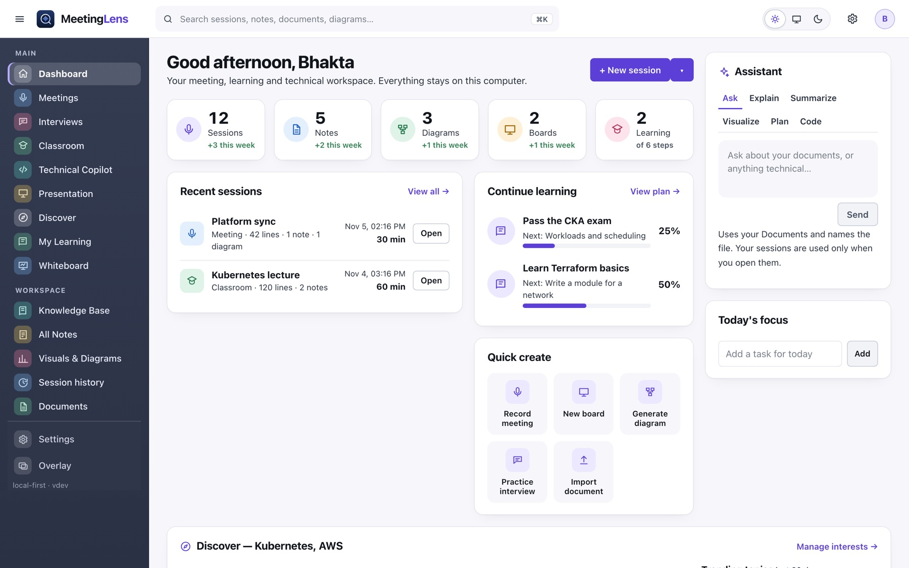

Raw audio stays local
Recordings are off unless you turn them on.
Free · Local-first · No account
Kinviva listens to your meetings, interviews and lectures, explains every point in plain words, and turns what was said into diagrams, whiteboards, notes and notes. It all stays on your computer.
Mac and Windows · Current installer 0.1.5 · Source on GitHub


One workspace
Capture it, understand it, draw it, keep it, and learn from it. Each part works with the others.
Live transcript, plain-English explanations, suggested replies, recaps, and decisions with owners.
Learn more →Questions are answered as they are asked, in the style you choose, without inventing your experience.
Learn more → New in 0.1.5Explain terms, plan safe troubleshooting, track incidents and draw architecture from what was said.
Learn more → New in 0.1.5An editable board with diagrams drawn from your sessions. Change them in words, with a preview first.
Learn more → New in 0.1.5Bar, line and pie charts built only from numbers that really appear in your material.
Learn more → New in 0.1.5Real articles and projects from official engineering sources, matched to the skills you follow.
Learn more → New in 0.1.5Lecture notes, study guides and practice quizzes from the lecture and your course files.
Learn more → New in 0.1.5Speaker notes, rehearsal feedback and answers to audience questions, from your own slides.
Learn more →Tour
Meetings
A live transcript on one side and plain-English insights on the other. Hard words are explained, and your answers come out ready to say.

Technical Copilot
New in 0.1.5Describe a problem and get a plan: possible causes marked as hypotheses, the evidence to collect, and read-only commands you copy and run yourself.

Whiteboard
New in 0.1.5Turn a meeting, an interview or a lecture into an editable diagram on a real whiteboard. Move it, rename it, and extend it with a sentence.

Discover
New in 0.1.5Add any skill you want to grow. Kinviva finds real articles and open-source projects from official sources and ranks them for you, on your computer.

Honest by design
Kinviva never presents a guess as a fact. When it draws your architecture, each box and line carries one of three labels, decided by code, not by the model.
A document you selected mentions it.
Someone in the conversation said it, in those words.
Kinviva suggests it. Drawn dashed, never called a fact.
How it works
Press Start. Kinviva listens to the call and your microphone and writes the transcript on your computer.
Each finished thought is explained in plain words. Ask a question, get a reply to say, or request a recap.
Save notes, draw a diagram, make a quiz. It is all searchable.
Privacy
Use local speech and a local model and nothing leaves your computer. If you choose a cloud service, the app tells you exactly what is sent.
Recordings are off unless you turn them on.
Never in files, logs or exports.
Nothing is collected about you.
Text is shown to you only. Nothing is typed into your call.
Questions
Yes. There is no account, no subscription and no paid tier. You only pay for any cloud AI service you choose to connect, such as Gemini. You can also use a local model for free.
The current installer is 0.1.5. It includes everything shown on this site: Meetings, Interviews, Technical Copilot, Classroom, Presentation, Whiteboard, Visuals, Notes and Discover.
Not unless you turn on "Save audio recordings" in Settings. By default it saves text, not audio.
Answers are suggestions from the AI service you connect and can be wrong. Kinviva labels what it knows and what it guesses, and never invents your own experience, but you decide what to say or do.
Macs with Apple silicon (macOS 13 or later). A Windows installer is available as an experiment.
Download Kinviva for Mac or Windows. No account, no subscription.
Download Kinviva